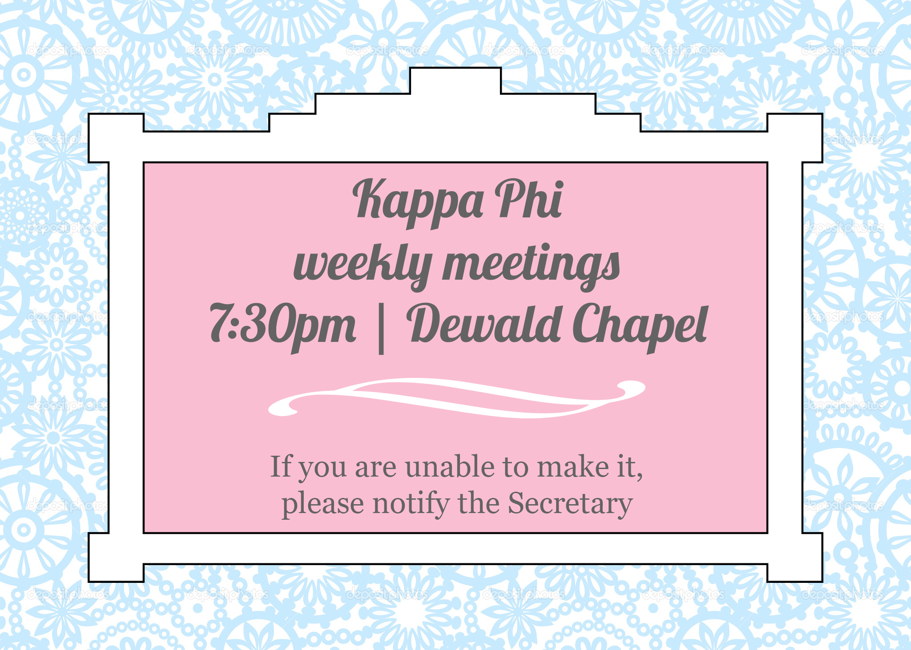
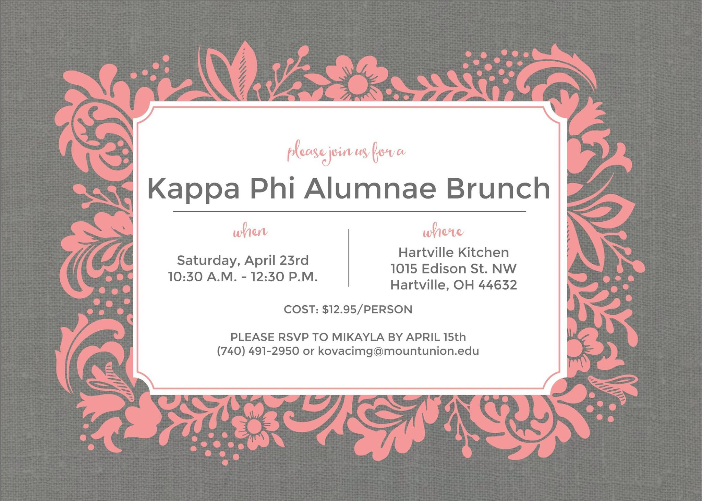

Events
Kappa Phi has many events throughout the year. Between chapter meetings, alumnae reunions, and Kora and National conferences, there is always something to do. Please watch your email and our social media accounts for updates.

